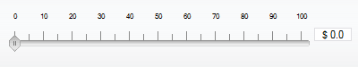

Version 3.0.0
Slider |
||||||||||||||||||||||||||||||||||||||||||||||||||||||||||||
|
Developer’s Guide Home
Installation and Configuration Common Concepts Components Index Border Layout Panel Calendar Chart Command Button Command Link Composite Filter Confirmation Data Table Date Chooser Day Table Drop Down Field Dynamic Image Folding Panel For Each Graphic Text Hint Label Input Text Input Textarea Layered Pane Level Indicator Popup Layer Popup Menu Select Boolean Checkbox Select Many Checkbox Select One Radio Spinner Suggestion Field Tabbed Pane Tab Set Tree Table Two List Selection Window Focus Load Bundle Scroll Position Ajax Framework Validation Framework Tag Reference API Reference |
Key Features
Basic ConfigurationTo add the Slider component to the page, use the <o:slider> tag. The API for this tag is very similar to that of the standard <h:inputText> component. The edited value can be specified using the value attribute that corresponds to selected number, which can either be specified as a literal number value, or be as a value binding expression that references a java.lang.Number type value or one any of its subtypes, as well as the primitive number types (int, float, double, etc.). When you set value attribute drag handle of slider display this value on the range between minimal and maximal values, which could be setted by minValue and maxValue attributes. Here's a simple example of defining the spinner component: <o:slider value="#{SliderBean.volumeLevel}" />
This displays a Slider component with ticks over the slider bar, handle shows value, control buttons and text field are not rendered. You can use the keyboard: press Up/Down, Right/Left, "+" / "-" keys to increase or decrease the current value, if you press Home/End key current value will be assigned to minimal/maximal value . By default, the step by which the value is increased and decreased is 5 though it can be changed using the minorTickSpacing attribute. Here's an example of declaring a Slider that allows specifying a floating point number in range 0..1 with a step of 0.1: <o:slider value="#{AjaxSettings.transparency}" minValue="0" maxValue="1" minorTickSpacing="0.1"/> A Slider component has big and small ticks. Big ticks has labels which has the same type as value of slider. You can specify distance between two big ticks by majorTickSpacing attribute, and distance between two small ticks by minorTickSpacing attribute. It's possible to allow the user change Slider value by using the increase/decrease buttons (keyboard keys). To do it all you need them visible by assigning true to the controlButtonsVisible attribute . Also there is opportunity to display Slider value by input text field or even change value by typing in this field. Text field of Slider has three states which are specified by typingAllowed attribute. By default typingAllowed attribute is assigned to off. If it's assigned to readOnly text field is displayed but user can't input any text to it, if it's assigned to writeEnabled then user car type in it. Here's an example of declaring a Slider that allows typing: <o:slider textFieldState="writeEnabled"/>
Slider's bar can be like a button. This option available if barCanChangeValue is assigned to true. When you click on the bar handle move in a one step towards the mouse position. Slider could by discrete and continuous. By default it discrete, that's means Slider value couldn't lie between to small ticks, and continuous means that Slider value could be any number limited only by the number type between them. This property controlled by stapToTicks attribute, by default is has true value. Like any JSF UIInput component, the Slider component supports the standard validator, required, immediate and disabled attributes. For more information about them, see JavaServer Faces specification (section "EditableValueHolder"). Specifying the Number FormatThe Slider component supports configuring number format to display a number. It is also assumed that the same number format is used by the user when typing a number. The <f:convertNumber> tag provides a range of options for customizing the appearance of numeric data, for instance it allows to specify number pattern using the syntax rules specified by java.text.DecimalFormat. <o:slider textFieldState="readOnly"> <f:convertNumber pattern="$ #,##0.0#"/> </o:slider> The result slider will look as follows:  Please note that maxIntegerDigits and minIntegerDigits attributes are not supported currently. Only an instance of NumberFormat can be specified as a converter for the slider. Customizing AppearanceA Slider component has two variant of orientation, three types of ticks and ticks labels positioning, two direction of increasing the value. To set orientation use orientation attribute and two values: horizontal and vertical. By default slider is horizontal oriented. To set type of ticks a ticks labels positioning use ticksAlignment attribute and three values: center, leftOrTop and rightOrBottom. By default if slider orientation is horizontal ticks will be on the top of slider bar, and ticksAlignment attribute has leftOrTop value, if slider has vertical orientation ticks will be on the right side of slider bar, and ticksAlignment attribute has rightOrBottom value. If ticksAlignment attribute has center value ticks are displayed on both sides of slider bar. Fill direction could be specified by fillDirection attribute. If the value of this attribute is fromStart which is default, then when you drag the handle from left/bottom to right/top the value increase, if value is fromEnd vice-versa. Here's an example of declaring a Slider which has vertical orientation, center ticks positioning and not default fill direction: <o:slider orientation="vertical" ticksAlignment="center" fillDirection="fromEnd"/> You can make ticks, ticks labels or bar invisible if assign to true ticksVisible, ticksLabelsVisible or barVisible attribute. A Slider component has customized tooltip. By default it's visible, but you can turn it off to assign false to tooltipEnabled attribute. You can apply styles for whole Slider component, to the tooltip and to the text field. Also you can apply styles for Slider when it's in the rollover states. The table below lists all of the styling attributes:
The following attributes allow customizing the Slider with images:
When user change value by not dragging the handle, drag handle move to the new position not at the same time. Animation effect is using and transitionPeriod attribute set time of this animation in milliseconds. Client-Side EventsThe Slider component supports all of the usual client-side event attributes applicable for all field components like the standard <h:inputText/>, such as onclick, ondblclick, onkeypress, onfocus, etc. Note that besides the standard functionality of the onchange attribute of being fired when dragging of the drag handle is finished, when click on the buttons, on bar, using keyboard or enter some char in the text field. Also there are onchanging event and it's fired when the Slider's handle is dragging. Client-Side APIAll client-side API methods for the Slider component are listed in the following table:
|
|||||||||||||||||||||||||||||||||||||||||||||||||||||||||||
| © 2010 TeamDev Ltd. | ||||||||||||||||||||||||||||||||||||||||||||||||||||||||||||